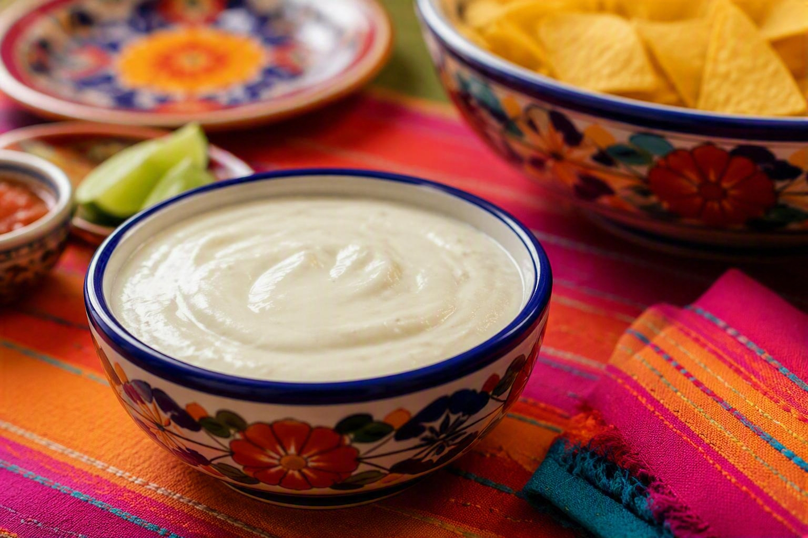

Home
White Queso Dip

Description
This white queso dip is the perfect snack for any gathering. It's a tried and true crowd favorite. It's also very versitle - it's great warm, at room temperature, or even right out of the fridge.
The recipe makes a large bowl, but it keeps in the refrigerator for several days and reheats as well as the first day.
Ingredients
- 2 8 oz. packages of cream cheese
- 1 can of artichoke hearts, drained and quartered
- 1/2 cup sour cream
- 2/3 cup fresh parmesan cheese
- 10-20 jalapeno rings (to taste)
Steps
- Put all ingredients in a food processor and pulse until roughly mixed.
- In a microwave safe dish, microwave on high for 3 minutes. You can do this in multiple batches, if needed. After microwaving, stir a little.
- While warm, transfer to your serving dish. The remainder can be refrigerated and will be good for several days.
- Serve warm or at room temperature for the best texture and flavor. Yummy!